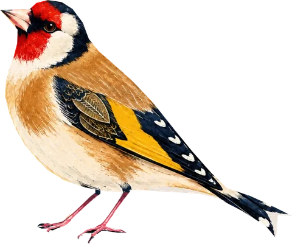
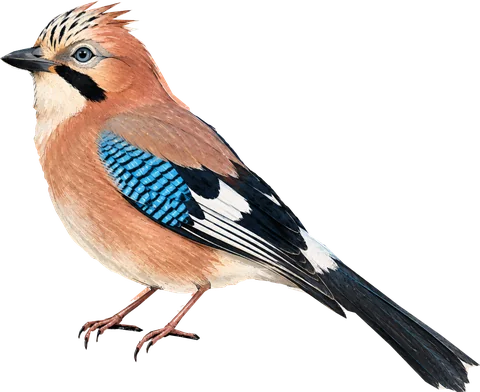
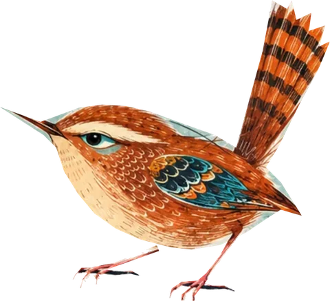
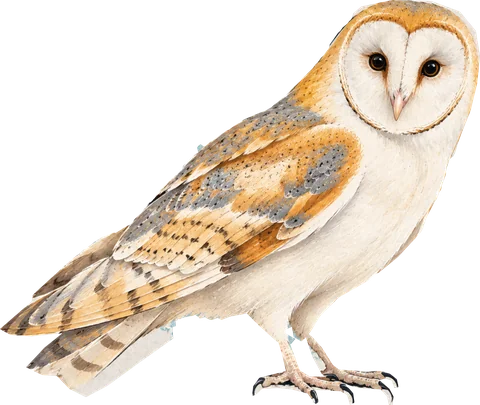
For Julia · with love, from Monty & Kat
Heard a Birdy
A listening garden for you, Mum.
When a bird sings outside, its portrait takes shape indoors.
The mill pond, Hooke Farm West Dorset
A place you’ve made for wildlife
You made room.
Life moved in.
Paths through long grass. Springs feeding the ponds. A meadow left to flower.
In your account of wilding at Hooke, you described flocks of linnets and goldfinches swooping over the meadow.
This is a little way to get to know
the voices among them.
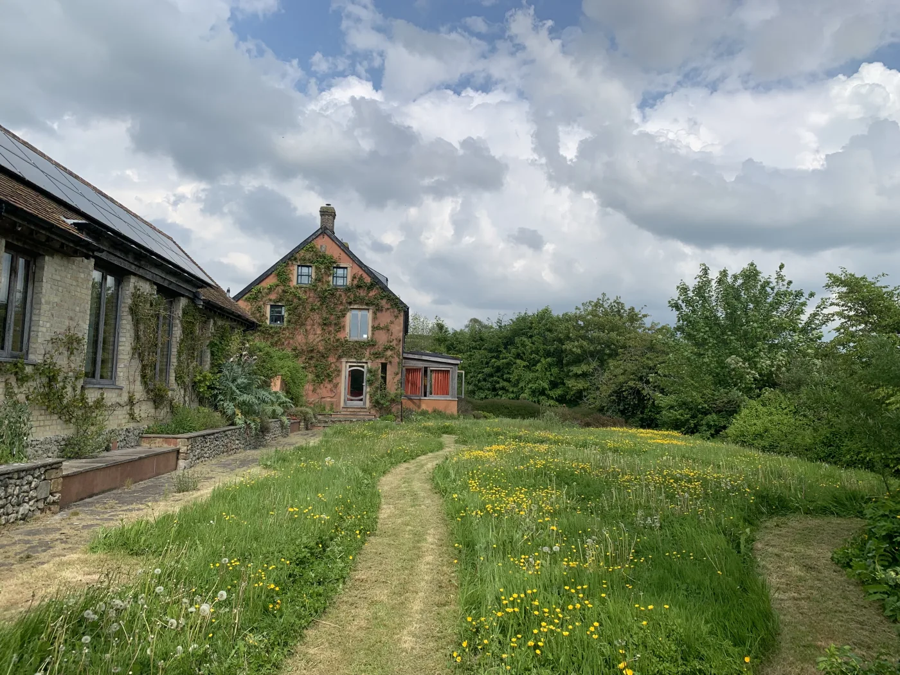
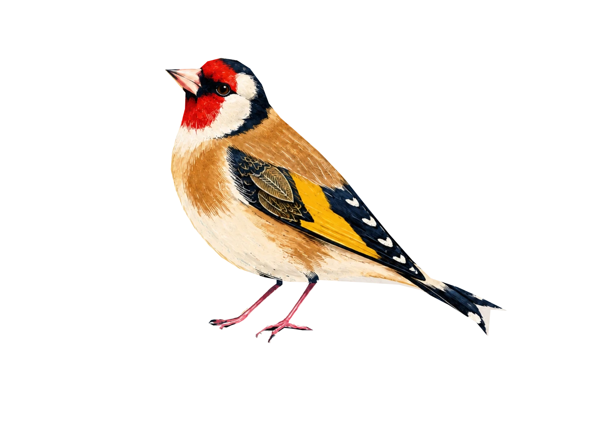
A song becomes a familiar face
Who’s that
in the garden?
A small microphone will listen from a sheltered spot in your garden. When a bird calls, it picks up the sound and passes it to a little computer called a Raspberry Pi.
BirdNET listens for patterns in the call and suggests which bird sang. On your screen indoors, a portrait of the bird takes shape.
Imagine a goldfinch calling. This is an example of what your garden could hear.
Browse all 45 bird portraits ↓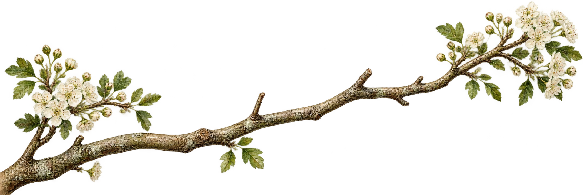
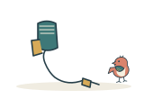
Garden microphone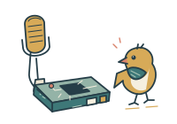
BirdNET on the Pi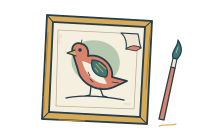
A portrait indoorsThe bird portraits
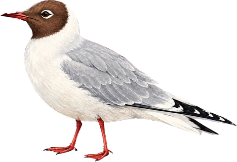
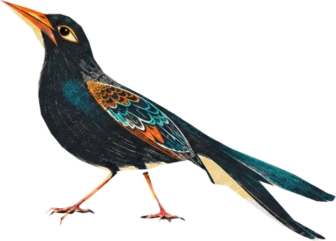
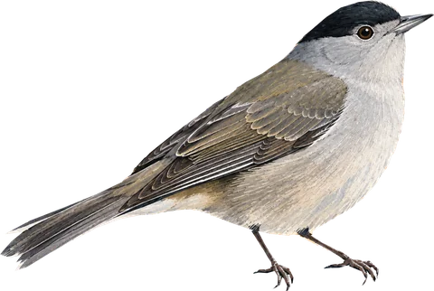
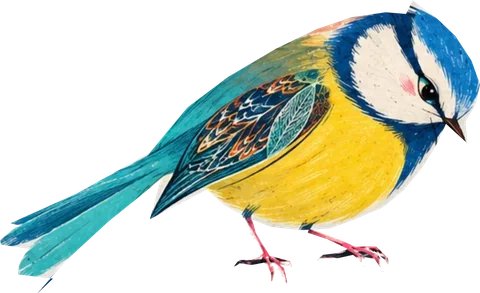
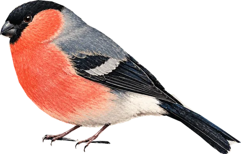
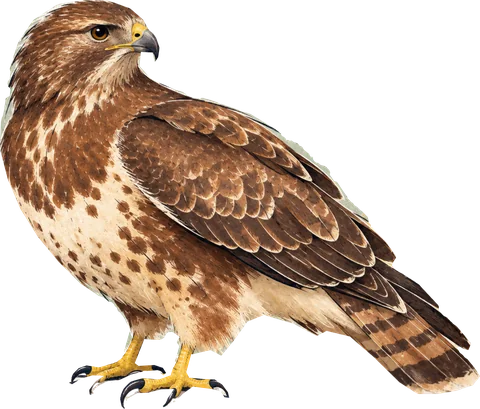
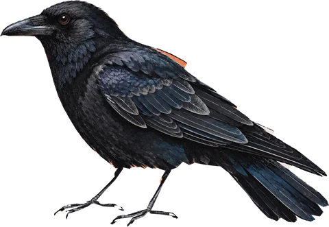
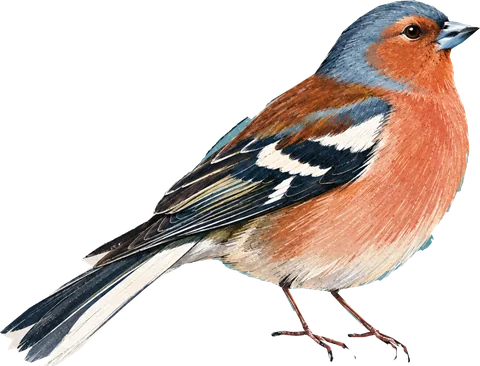
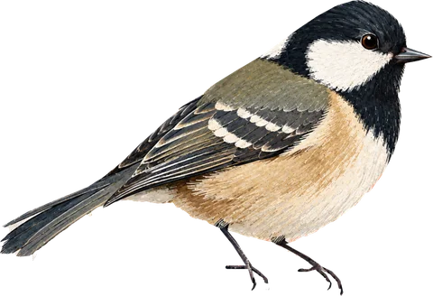
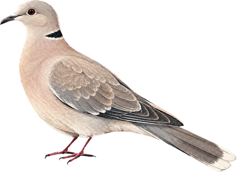
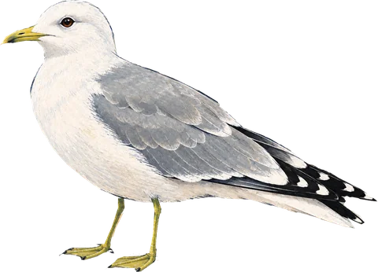
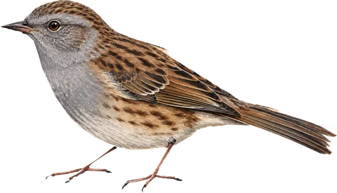
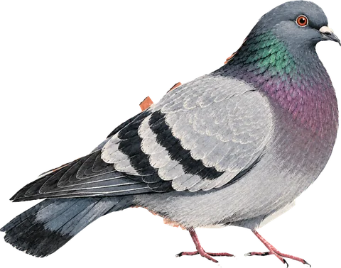
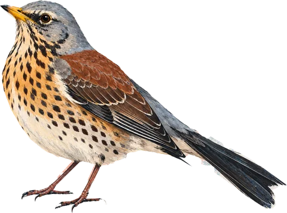
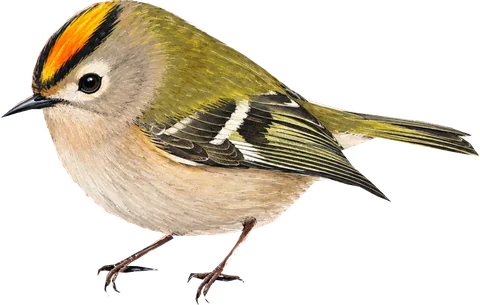
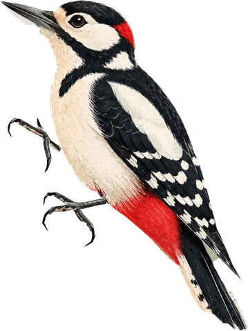
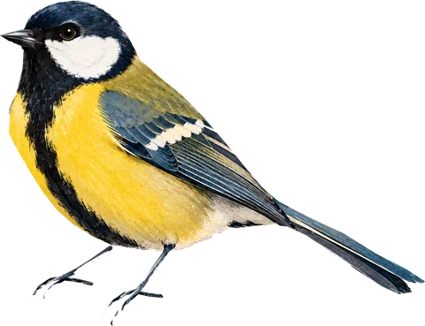
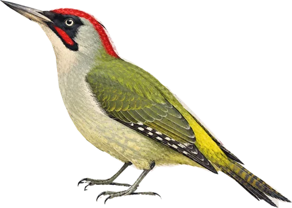
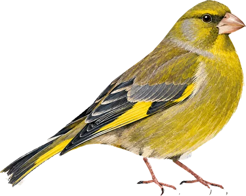
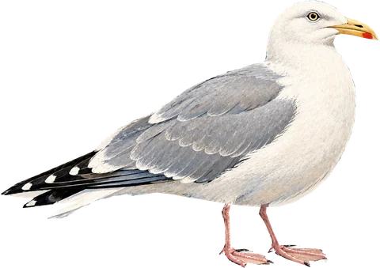
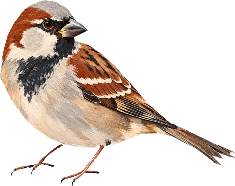
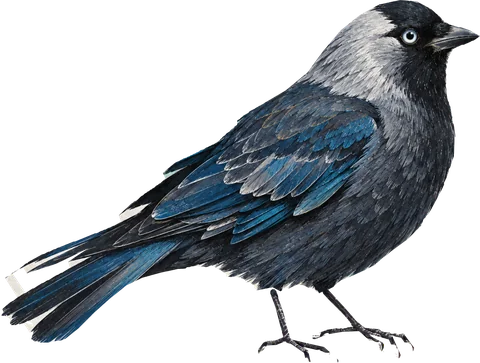
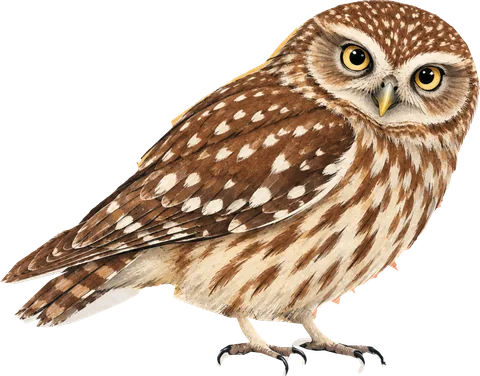
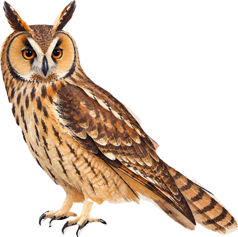
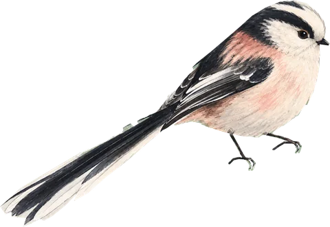
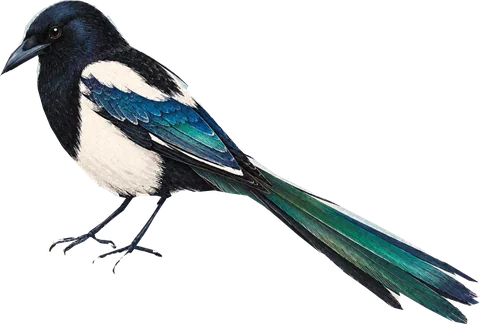
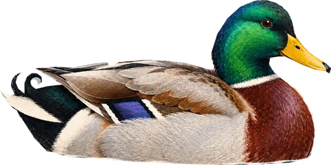
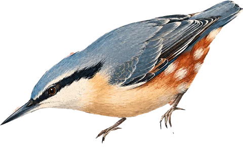
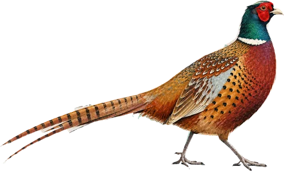
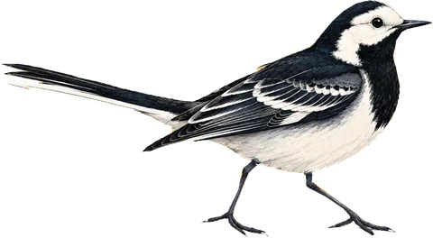
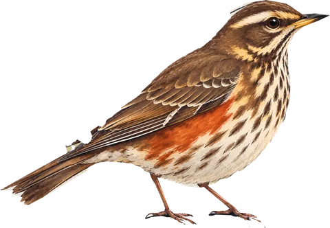
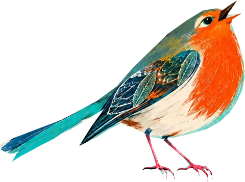
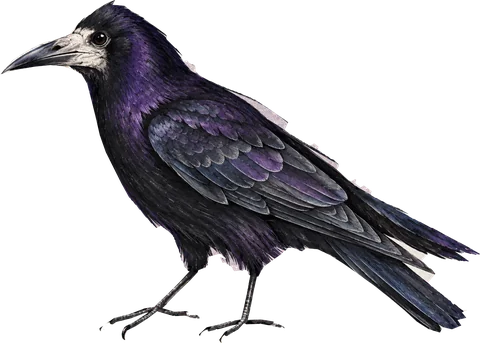
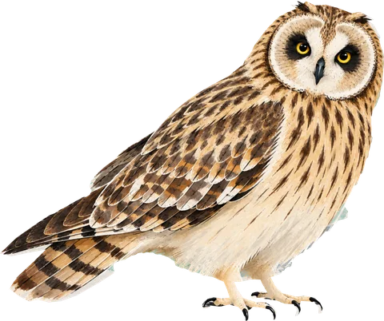
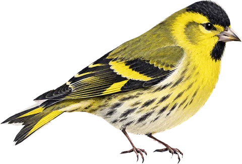
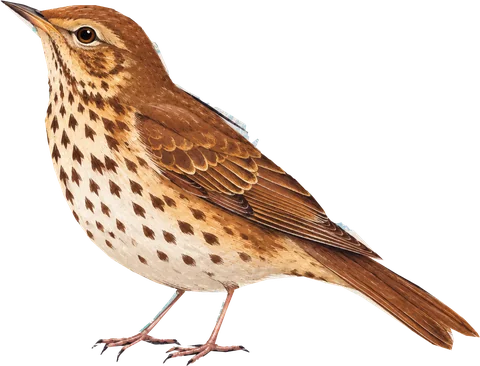
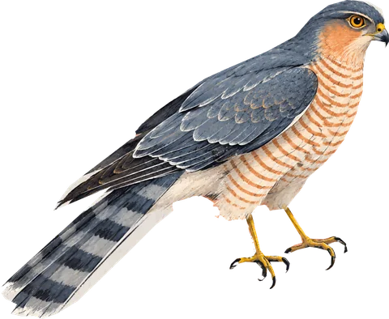
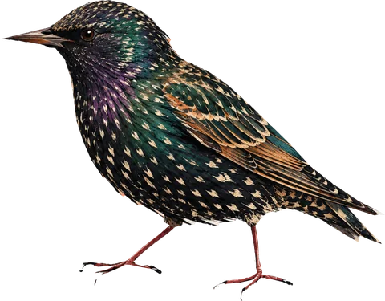
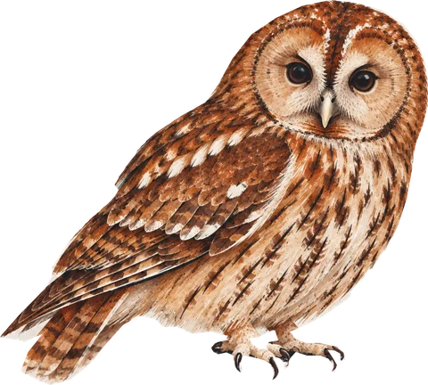
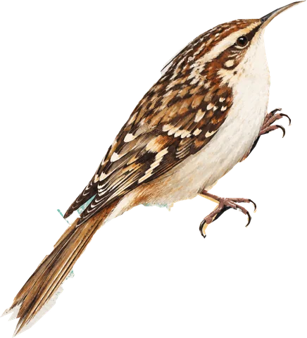
The pleasure of a closer look
Birdsong,
in watercolour.
A sketch, a wash of colour, the small details. Each portrait takes a moment to appear.
Something to pause with while the real garden carries on outside.
Kat painted the birds and designed your listening garden.
The film couldn’t load. You can still explore the finished paintings on the next pages.
A picture that grows with the day
A gathering on the branch.
Birds appear in the order they’re heard.
The sky colours follow the time of day.
Another way to see who’s been by
A tree full of familiar faces.
Different voices find a place together.
A growing picture of the garden’s variety.
Ecological intelligence at Hooke Farm
Your garden, in numbers.
Mum, when the listener recognises a call, it adds the bird’s name and the time to your diary. Look across those entries and you can see when the chorus starts, which voices return and how the garden changes through the seasons.
Illustrative data · Example garden
Listening dashboard
A year of birdsong
Detections per listening hour · Nov 2025 – Oct 2026
When the garden sings
Average detections per listening hour · UK local time
What changed this week?
The voices in the diary
All birds · 1–18 November 2026
See the chart values
A less familiar voice
Jay
Three detections this month, after 28 days of listening without a jay call. That gap earns the jay an iridescent feather in this example.
Reading the marks
- Singing now
- The ripple appears after a fresh, qualifying detection and fades as the call passes into the diary.
- Unusual here
- The iridescent feather marks a visitor outside this garden’s recent listening pattern. Even a familiar British bird can earn one.
- Rare bird
- The gold feather needs separate evidence that the species meets the regional rarity criteria.
The tech behind
the listening garden.
I’ll set this up for you at Hooke, Mum. From the farmhouse you’ll be able to see which bird is singing out in the garden.
-
The garden microphone
Under shelter, the microphone picks up the birds. A USB sound converter turns their calls into a signal the Pi can read.
-
The little computer
BirdNET runs on the Raspberry Pi 4. It suggests a species and sends the name, time and confidence of the match to the garden’s server.
-
Your screen indoors
The server keeps your listening diary. Open the garden in your browser to watch each portrait appear.
What might grow from your garden?
If the pilot goes well at Hooke, Mum, we could make a listener that anyone could hang in their garden and connect to Wi-Fi. Imagine that little glass bird catching the evening light, with its microphone tucked under a wing. Inside, a purpose-built circuit board, perhaps one day with a custom chip, could do the work of the Pi and its separate boxes.
Then imagine a few neighbours joining in. One spring challenge could be to listen for the first blackcap singing in each garden. Each garden that heard one could add a painted blackcap to a shared map. Watch the dates fill in across Dorset, then come back next spring and see how the pattern changes.
The mill pond · Hooke FarmFor Mum, with love
For all the life
you’ve made
room for.
A little gift to bring your garden
closer to you.
Love, Monty & Kat
Explore the example gardenA demonstration to explore while your
listening garden is getting ready.